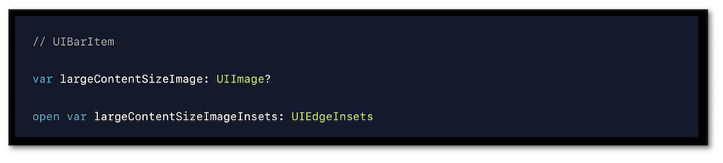

WWDC 2019 : Large Content Viewer
This video available on the official Apple website (session 261) aims at highlighting the new iOS 13 features dealing with the Large Content Viewer implemented with the Dynamic Type accordingly since iOS 11.

Various contents and their video timelapse are indicated hereunder:
-
Dynamic Type (00:57)
-
Large Content Viewer (01:54)
-
Image settings (04:02)
-
Custom Views (04:52) ⟹ iOS 13 new feature
-
Examples (09:15)
Thereafter, according to the presentation configuration, the selection of a title or a timelapse will give rise to the video playback on the Apple website directly at the appropriate moment.
Dynamic Type (00:57) #
Reminder on the Dynamic Type feature whose goal is to customize the text size thanks to the user settings.
The iOS developers guide section of this site contains many useful information about the implementation of this feature.
Large Content Viewer (01:54) #
This feature introduced in iOS 11 and available only for the accessibility text sizes allows people with low vision to use UIKit bar elements as effective as the Dynamic Type grows the text size.

To trigger this functionnality, the user must long press the element to see a larger version, drag his finger along the bottom bar to find out all the bar items and let it go to activate the proper one.

It's important to notice that 'scaling with Dynamic Type is always preferred to showing the Large Content Viewer' that must be implemented 'only for the case when your custom UI cannot grow in size'.
Image settings (04:02) #
In this part of the video, all the image characteristics are reviewed to get as smooth and detailed a rendering as possible when the image is getting larger, as indicated in the iOS developers guide section.
The Xcode Interface Builder can be associated to some lines of code for this purpose:

Custom Views (04:52) #
When implementing the Dynamic Type feature, iOS 13 allows to show the same UI that's shown for standard UIKit bar items.

The UILargeContentViewerItem protocol (05:35) defines the needed information for the large content viewer and is already implemented by the UIView class that provides setters as well (no need to subclass and override):

A gesture interaction must also be added (06:52) to finalize the large content viewer implementation:
Some properties are also bound to this interaction (07:11) to get and/or define more details:

Finally, the delegate of the gesture interaction contains some specific options (07:52) to provide custom actions:
Examples (09:15) #
The first example deals with standard UIKit views.

The second example takes into account custom classes for some buttons (09:53) whose properties must be overriden to be well defined.
The last example tackles a button with an already existing long press action (10:36).